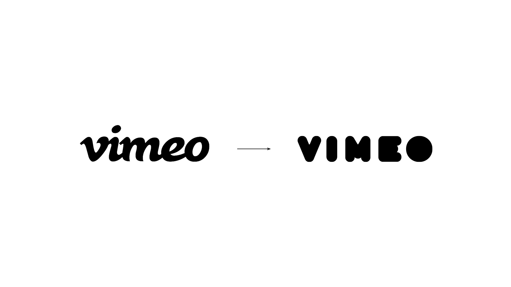
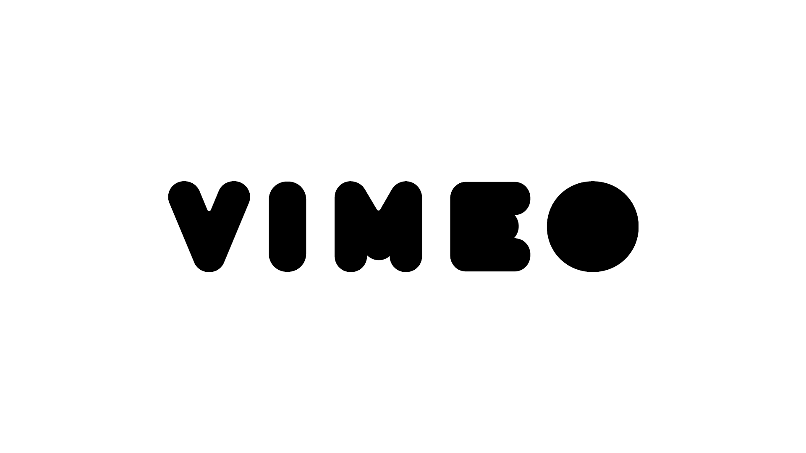
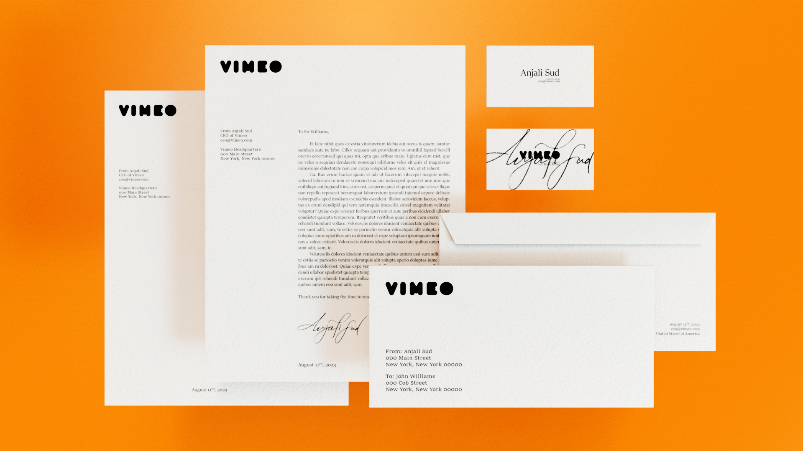
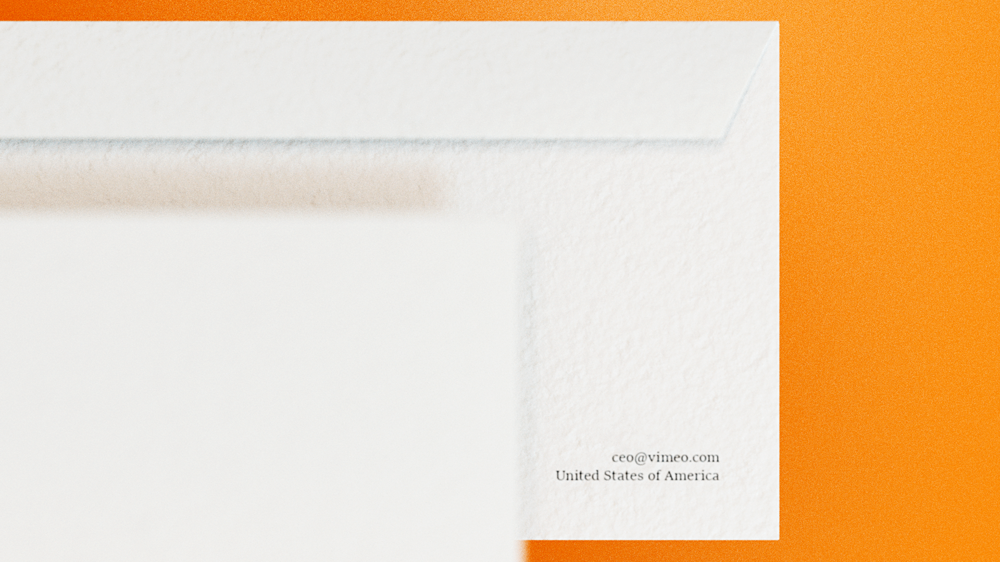
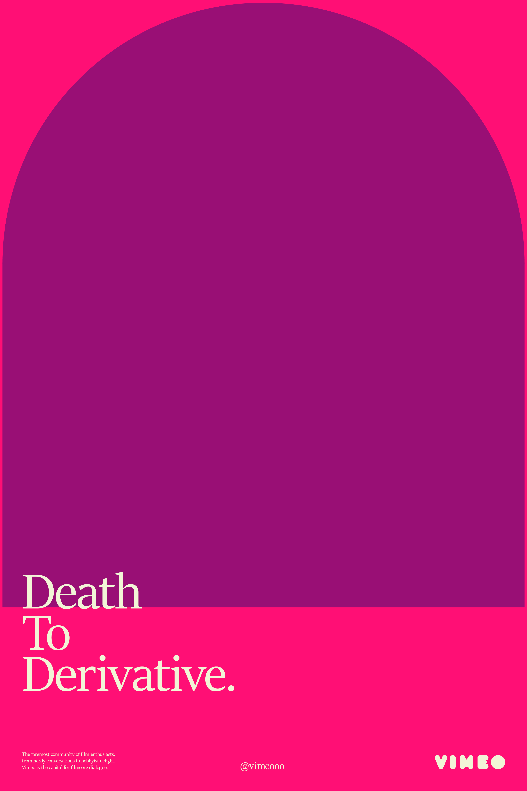
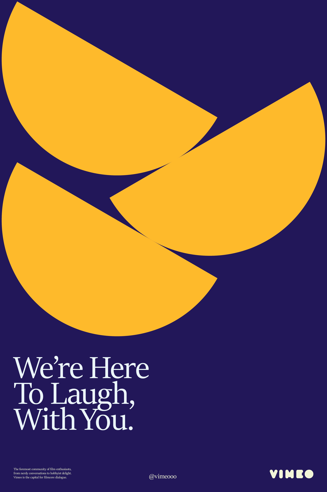
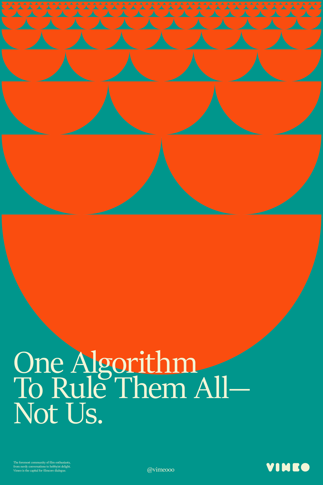
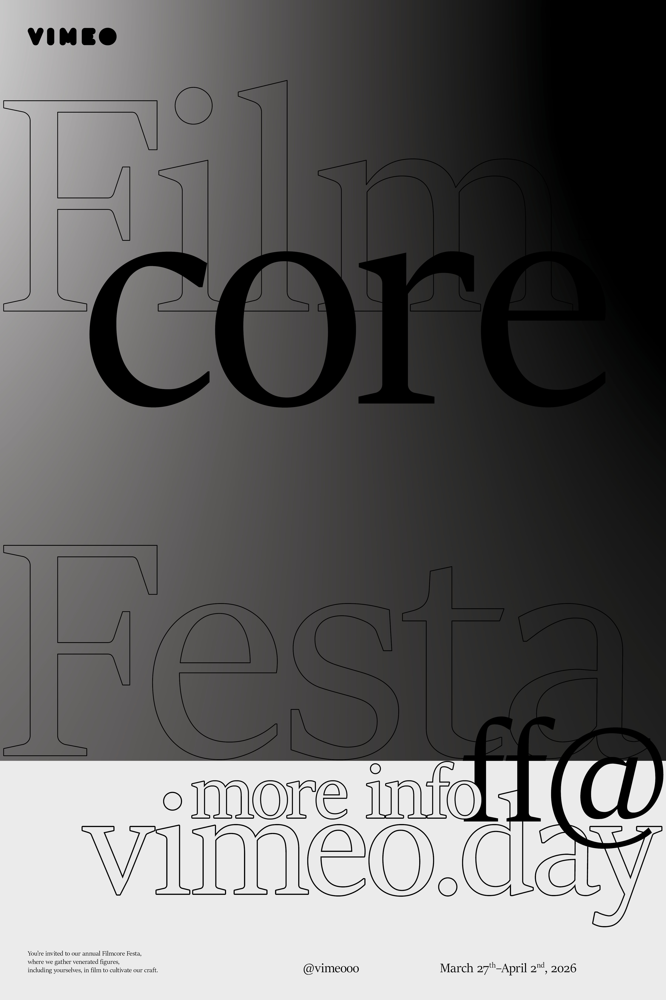
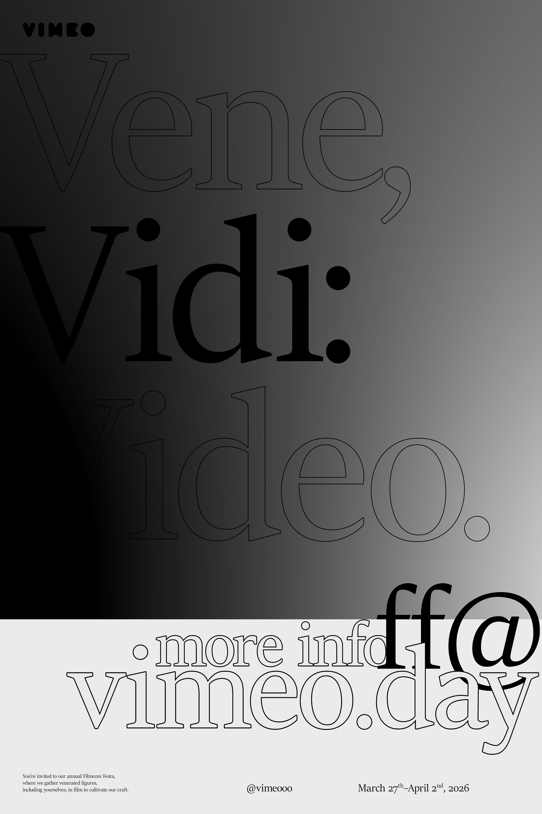
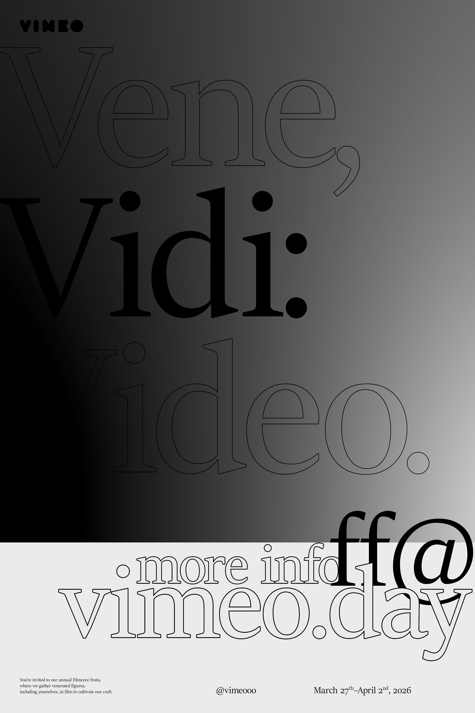

3D Logotype Reveal
 Wordmark Evolution, 2006 ► Present
 Letterhead Applications
    

Public/Filmcore Festa Poster Series
Early Logo/Motion Tests
Vimeo
Client: Brad Bartlett
Role: Design, Art Direction
Year: 2022
View on desktop for more information.
Problem
Vimeo is the fusion of video and me, yet the identity represents them—the company, the product, the perks. Yes, the brand's distinct wordmark stands out and its audience constantly uses its service. No, the brand's voice and attitude do not reflect the sentiments of its users. Now, Vimeo puts its users in the limelight and celebrates film on a grander stage.
Approach
The natural next step is creating a container which the user's sentiments live and breathe in. This idea is the foundational principle informing the new wordmark. The key visual motif is the circle, used to construct each letterform. Then, the components of a circle become building blocks for the subsequent identity.
Solution
The resulting identity took form in letterhead and posters. One poster series expressed the company's alliance with its users, and the mission to carve out a distinct space for them. The second series highlights the information of the speculative Filmcore Festa—an event to celebrate filmcore.